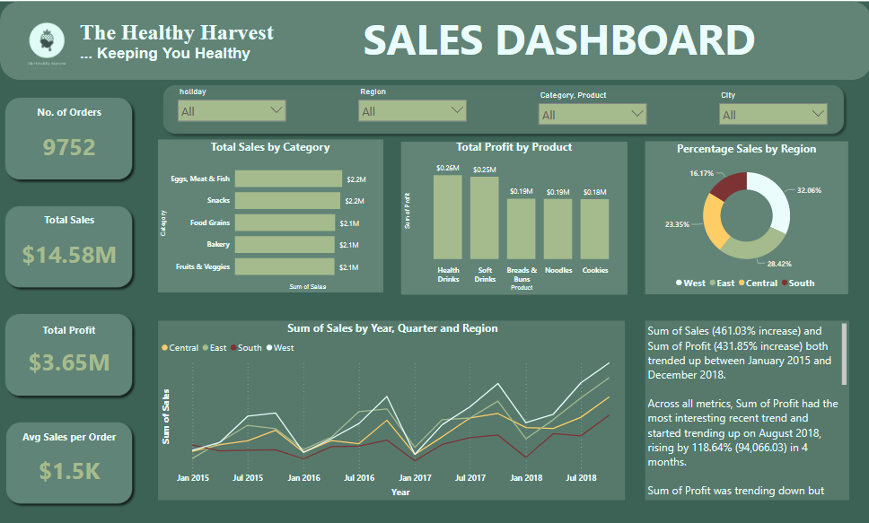
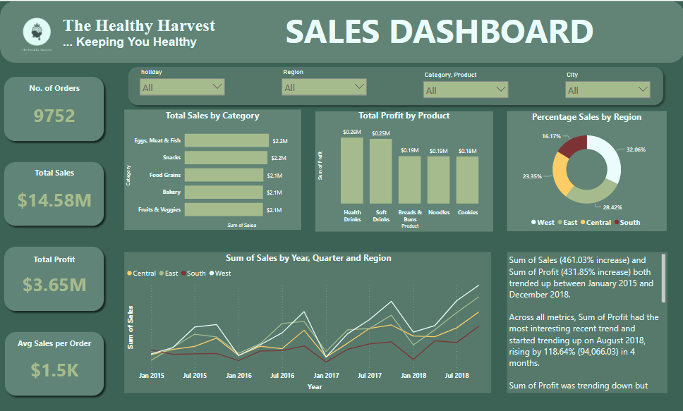
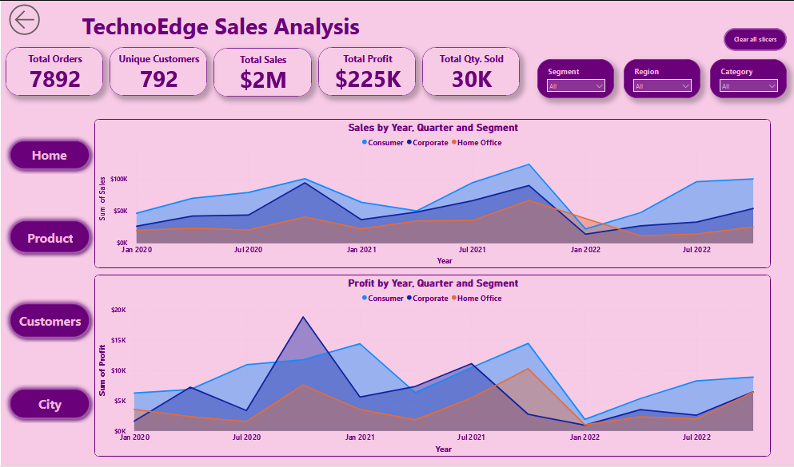
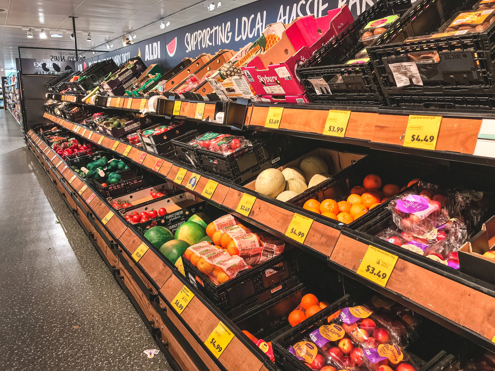

Built a Random Forest classification model to predict whether or not a booking will be canceled and identify factors that significantly influence it. I used Python libraries including numpy, pandas, matplotlib, seaborn, and sklearn. I cleaned up the data, visualized, explored, analyzed, and trained the data comparing different classification models before building the final Random Forest classification model. The model was tuned using grid search and random search CV for hyper-parameter tuning in order to get the best results achievable. I identified the key factors influencing the booking status and offered recommendations on policies the hotel can implement to maximize profit in the event of a cancelation.
 

I collaborated with "The Healthy Harvest," an online grocery retailer, to enhance customer satisfaction. Leveraged Excel for data analysis, Python for predictive analytics, Power BI for data visualization, and PowerPoint for presentation. Identified top-selling product categories, sales trends, and profitable products. Developed a Sales Forecast model to optimize stock levels, mitigate overstocking, and prevent revenue loss. Recommendations included stock level adjustment implementation for peak sales days and tailored marketing campaigns for high-demand product categories to maximize sales.

In this project, i efficiently consolidated employee data from diverse sources using Power Query, streamlined data management with Excel, and created insightful visualizations through charts and a user-friendly dashboard. Impactful metrics, including total employees, average salary, and performance indicators, empowered data-driven decision-making. The project improved database management, performance tracking, and productivity.

I transformed an arduous and resource-intensive manual analytics process into an efficient, automated workflow. By streamlining data extraction, cleansing, analysis, and report generation leveraging the capabilities of Power Query and Power BI, this initiative not only saved time and resources but also enhanced data accuracy, provided real-time insights, and improved overall cost efficiency. This project showcases the profound impact of automation on operational efficiency and data-driven decision-making.

I demonstrated my adeptness in data analytics, SQL, and Power BI. I built a robust SQL database to house the datasets supplied by HR for effective data management, efficiently identified health-conscious employees, designed an intuitive dashboard, and translated data into actionable insights. My proficiency in SQL, database management, and Power BI enabled the successful implementation of a Healthy Bonus Program, equipping HR with data-driven decision tools.

As a seasoned Data Analyst, I've demonstrated my proficiency through impactful Exploratory Data Analysis (EDA) projects, notably the "Supermart Grocery Sales EDA" and the "Titanic Dataset EDA." These projects underscore my ability to harness Python, Pandas, Matplotlib, Seaborn, and Scikit-Learn for data-driven decision-making. By translating complex data into actionable insights, I consistently drive value and innovation.

I analyzed Walmart's sales data using advanced SQL skills to optimize strategies and drive data-driven decisions. Demonstrated SQL mastery in data wrangling, feature engineering, and EDA, resulting in enhanced data accuracy and actionable insights for improved sales strategies.